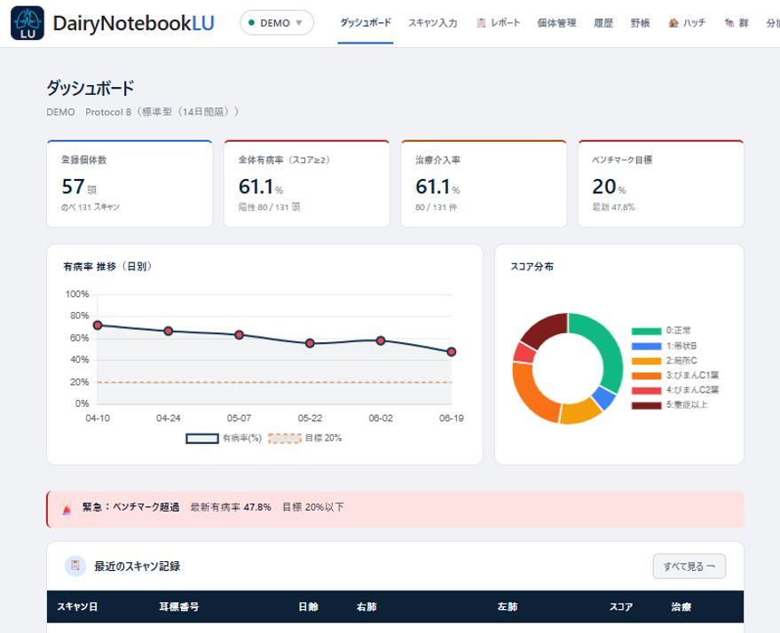
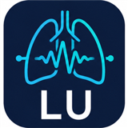
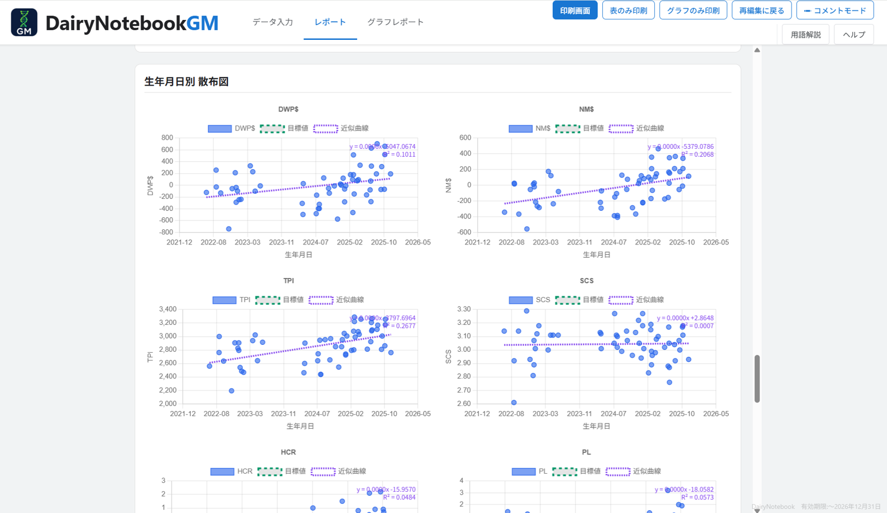
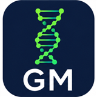
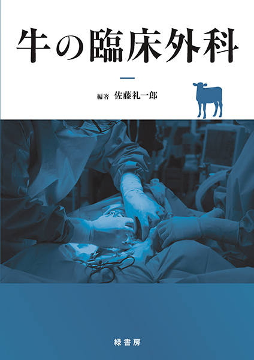
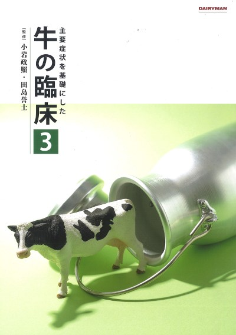
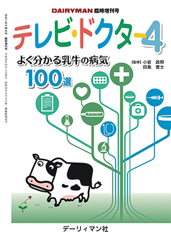

2025
日本獣医師会雑誌
北海道・オホーツク地方で牛の診療にあたる臨床獣医師。現場で見つけた課題を、自らの手でソフトウェアと研究に変えています。
鹿児島県で育ち、帯広畜産大学で獣医学を学びました。2003年から、北海道・オホーツク地方で牛の臨床にあたっています。
臨床獣医師の仕事は、病気を治すことだけではありません。予防、牛群管理、そして農場全体のコンサルテーションまで。一頭の牛から、群れ、そして農場経営へ——現場を包括的に診るのが、この仕事です。
牛の命を救い、農場を伸ばす。それが臨床獣医師の役目だと考えています。
その日々の現場から、記録や分析のためのソフトウェアづくり、症例の執筆や発表にも取り組んでいます。
インストール不要、ブラウザで動く軽量なアプリ群です。入力したデータは外部に送信されず、手元に保存されます。すべて無償でご利用いただけます。


子牛の肺エコー所見を肺葉ごとに記録し、スコアを自動算出。ハッチマップやダッシュボードで群全体の傾向まで可視化します。
アプリを開く ↗

ゲノム評価のデータを読み込み、順位付けや指標選択を直感的に。レポートづくりと農場への還元まで支援します。
アプリを開く ↗下記からご登録ください。ご登録内容を確認のうえ、折り返し利用コードをお送りします。コードをアプリに入力するとご利用いただけます。
※ 掲載誌の著作権に配慮し、全文は出版元へのリンクでご案内しています。論文は順次掲載予定です。
牛の臨床で広く読まれる定番書に、執筆者の一人として加わっています。

緑書房／2025 編著：佐藤礼一郎
分担執筆
デーリィマン社 監修：小岩政照・田島誉士
分担執筆
デーリィマン社（臨時増刊号） 監修：小岩政照・田島誉士
分担執筆※ 表紙画像は各出版社の書籍を示すものです。各書名から販売ページをご覧いただけます。
「臨床獣医師の仕事 ～人を育て産業に寄与する～」など、複数部にわたる長期連載（第26部ほか）。
腸管手術ほか、複数回にわたる連載（第9回ほか）。橘泰光 共著／佐藤礼一郎 監修。
技術ワイド「移行期管理を再確認」
家畜診療 70巻12号 p. 717–721
連載「現場で活かす酪農技術」／乳頭口スコアに着目した大規模農場の乳質改善の一事例
※ 一部を掲載しています。寄稿・連載は順次追加予定です。
大脇茂雄、川向一子
大脇茂雄（登壇）
大脇茂雄（講演）
大脇茂雄（講演）
※ 一部を掲載しています。発表・講演は順次追加予定です。
獣医師の仕事を離れて——個人的につくった、もう一つのアプリです。